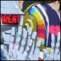
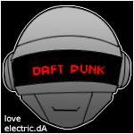
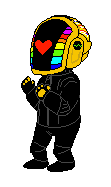

Hallo allemaal. Ik ben Sebastiaan Buwalda en dit is mijn spreekbeurt over Daft Punk. Daft Punk is een Frans house- en electroduo bestaande uit Thomas Bangalter en Guy-Manuel de Homem-Christo. Als jonge artiesten werden ze midden jaren 90 plotseling bekend. Samen met artiesten als Laurent Garnier en Motorbass zijn ze pioniers van de Franse dancemuziek. Daft Punk behoort daarnaast tot de grootste vernieuwers van housemuziek van de late jaren 90 en is de groep bij uitstek die de 'French Touch'-house populair maakte.
  Daft Punk Daft Punk op het Wireless Festival 2007 Daft Punk op het Wireless Festival 2007 Achtergrondinformatie Jaren actief 1993-heden Oorsprong Parijs, Frankrijk Genre(s) house, electro, pop Label(s) Virgin, Columbia Records Verwante acts Stardust Bezetting Huidige leden Thomas Bangalter Guy-Manuel de Homem-Christo Website (en) Last.fm-profiel Portaal Portaalicoon Muziek Daft Punk is een Frans house- en electroduo bestaande uit Thomas Bangalter en Guy-Manuel de Homem-Christo. Als jonge artiesten werden ze midden jaren 90 plotseling bekend. Samen met artiesten als Laurent Garnier en Motorbass zijn ze pioniers van de Franse dancemuziek. Daft Punk behoort daarnaast tot de grootste vernieuwers van housemuziek van de late jaren 90 en is de groep bij uitstek die de 'French Touch'-house populair maakte. Inhoud 1 Biografie 2 Grammy's 3 Discografie 3.1 Albums 3.2 Singles 3.3 Radio 2 Top 2000 3.4 Dvd's 4 Externe links Biografie Daft Punk kent zijn oorsprong in de punkband Darlin', die ontstond in de tienerjaren van het duo en die behalve Thomas en Guy-Manuel ook Laurent Brancowitz als muzikant had. Het was geen succes. Het blad Melody Maker noemde in een recensie een nummer van de band "daft punk" ("maffe punk"). De groep viel uit elkaar – Laurent Brancowitz vertrok om door te gaan in de indierockband Phoenix – en alleen Thomas en Guy-Manuel bleven over. Samen produceerden ze het een en ander om dit vervolgens op een feest aan Orde Meikle en Stuart McMillan van het Schotse Soma-label te overhandigen. In 1994 brachten ze op Soma hun eerste single uit, The New Wave, onder de van Melody Maker overgenomen geuzennaam Daft Punk. Deze single werd vrij snel opgevolgd door de eerste hit Da Funk. In 1996 tekenden ze bij het grote Virgin-label, waar in 1997 hun eerste album Homework op uit kwam, waarop naast Da Funk ook onder andere Around the World stond. Ook traden ze toe tot Da Mongoloids, opgericht door Armand Van Helden. In 1997 kwam Daft Punk met zijn eerste liveshow met onder andere de nummers Daftendirekt en Da Funk. Van deze liveshow werd in 2001 een livealbum uitgebracht, Alive 1997, een 45 minuten durende cd die geleverd werd met een stickervel om het cd-doosje helemaal eigen te maken. Guy-Manuel en Thomas richtten ieder een eigen label op, respectievelijk Crydamoure en Roulé. Guy-Manuel bracht er als Le Knight Club platen uit, Thomas onder zijn eigen naam. Ook zat Thomas samen met Alan Braxe en Benjamin Diamond achter de groep Stardust, die één hit scoorde met The Music Sounds Better With You. Verder produceerde hij de soundtrack van de film Irréversible. In 1999 bracht het duo een eerste dvd-videocollectie uit, getiteld D.A.F.T.: A Story About Dogs, Androids, Firemen and Tomatoes, met onder andere een aantal nummers van het debuutalbum Homework.
Dat was mijn spreekbeurt. Mijn favoriete liedje is STRONGER omdat kanye west cool is. 2Hbben jullie nog vragen?